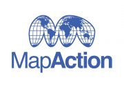

State of the Map 2013
the OpenStreetMap event: 6-8 September 2013


- If you were at SotM 2013, the team thanks you for your company - and please help us to make future SotMs even better by filling in our short feedback form
- Most of the two main tracks were recorded and videos are available, along with some interviews that were filmed with people who were at the conference.
The 2013 global OpenStreetMap convention was in Birmingham, UK
OpenStreetMap's annual international conference, State of the Map returned to the UK, the first time it has come to the UK since the very first State of the Map in 2007.
State of the Map is the global gathering for everyone contributes to and/or uses OpenStreetMap. We assemble to celebrate the scale of the changes and achievements so far. There are keynotes and breakout streams of presentations and workshops examining current practice, organisation and relationships; and preparing for the changes we can expect in coming years. In fact, so much has happened and is happening to OpenStreetMap that the theme of 2013's conference was "Change".
| 2007 | 2013 |
|---|---|
| 10,000 registered users | 1.1 million registered users |
| 50 million GPS points | 3.2 billion GPS points |
| Advanced editor: JOSM version 321 | JOSM version 6115 |
| Easy editor: Potlatch 0.5 | iD editor launched |
| time before edits appeared on the map: about a week | about a minute |
There's also always space for ad-hoc presentations in Lightning Talks slots, and for in-depth community discussions in the Birds of a Feather space. And following on from State of the Map on Friday-Saturday-Sunday, on Monday there was a Hack Day at nearby Farraday Wharf.
State of the Map was held in Manchester in 2007, Limerick 2008, Amsterdam 2009, Girona 2010, Denver 2011 and Tokyo 2012 - but with 300 attendees from all over the globe, 2013 in Birmingham was the biggest SotM yet!
State Of The Map would not be possible without the generous support from our sponsors!
|
|
||
|  | |